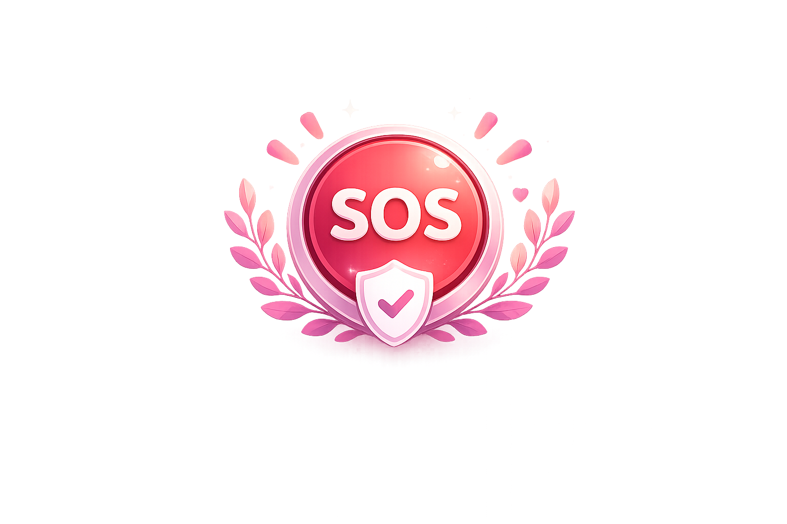
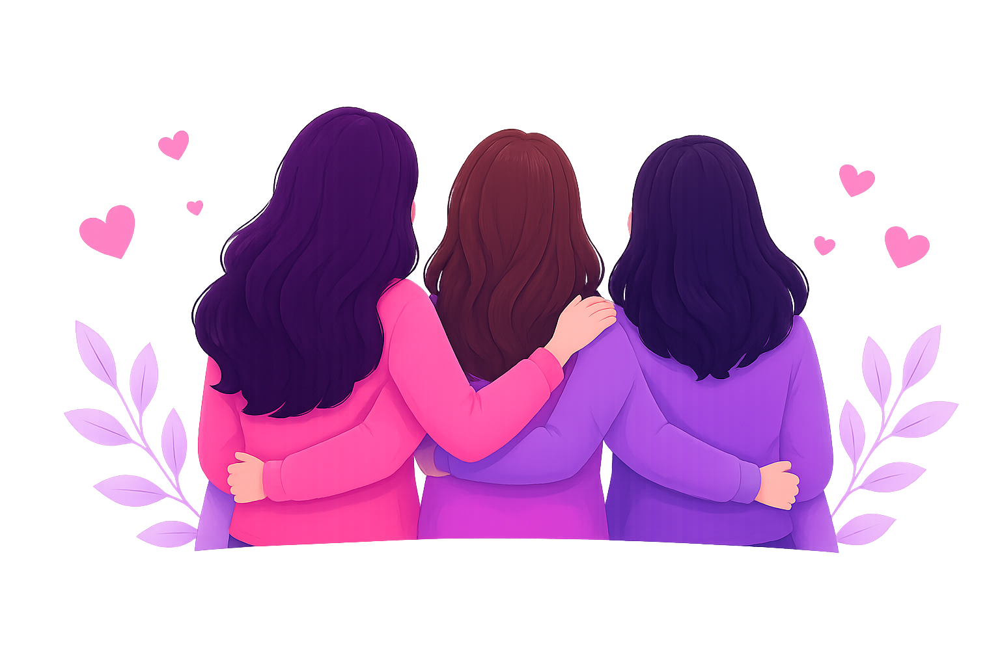

Protection When
Seconds Matter
Project Shadow aims to help women
access emergency assistance faster
through SOS alerts, location sharing,
and safety-focused tools.
Our Mission
To empower women with a simple, effective and reliable safety system that ensures help is always just one tap away.
❝
Safety should be accessible,
simple and immediate.
Because every second counts.
❞
Key features
Live Location
● Share your real-time location with trusted contacts

Audio Recording
● Record surrounding around during critical situations

Emergency alerts
● Instant sms to trusted contacts and emergency services

SOS button
● One tap to SOS alert contacts and share live location
Why Project Shadow?
Feeling safe shouldn't be a privilege—it should be a basic right. Project Shadow was built to make help accessible in seconds, ensuring you're never alone when it matters most.

Made with ❤️ for safety.
Project Shadow began as an idea to make emergency help faster and more accessible. Every feature is designed to help people feel safer and connected during emergencies.
Developed by
A Student Developer
Built with curiosity, creativity and a passion for using technology to solve real-world problems.